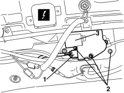

7030L24 SLIDING BLIND MOVEMENT MOTOR - R.R.
- Path
- Procedures > 70 FITTINGS > 7030 SUN ROOF/GLASS PANEL > 7030L TRANSPARENT ROOF PANEL > 7030L24 SLIDING BLIND MOVEMENT MOTOR - R.R.
- Kind
- repair procedure (removal / refitting; the operation number is the code)
- Applies to
- all engines; all production periods
- Interactive page
- https://sloeber94.github.io/elrnDB-aBrrSpdr/en/#/946002585
Applies to: all engines; all production periods
 Removing
Removing
 Refitting
Refitting- Remove the rear parcel shelf.
Op. 7040G30 BOOT LIGHT BULB HOLDER - R.R.
- Work on both sides of the vehicle.
Op. 7050A22 REAR SEAT CUSHION - R+R
Op. 7040H42 REAR PILLAR TRIM (ONE), LEFT OR RIGHT- R.R
Op. 7040H38 CENTRE PILLAR UPPER ELEMENT (ONE), LEFT OR RIGHT - R.R
Op. 7040H30 FRONT PILLAR TRIM (ONE), LEFT OR RIGHT - R.R.
Op. 7065C34 SUN BLIND (ONE), LEFT OR RIGHT - R.R.
Op. 7040E40 FRONT COURTESY LIGHT - R.R.
Op. 7065C60 INTERIOR REAR VIEW MIRROR FOR VERSIONS WITH RAIN/DUSK SENSOR - R.R.
Or, alternatively.
Op. 7065C68 INTERIOR REAR VIEW MIRROR - R+R
Op. 7005A34 FRONT SIDE DOOR COMPARTMENT SEAL - R.R
Op. 7030L12 TRANSPARENT ROOF PANEL COVER - R.R.
1. Disconnect the electrical connection.
Description | Component |
|---|---|
ROOF SLIDING BLIND CONTROL UNIT |
2. Undo the motor fixing bolts.
3. Remove the motor by releasing the pinion from the control cables.

Applies to: all engines; all production periods
Refitting
Removing- Check that the motor is not damaged.
- Position the motor in its seat and engage the pinion with the control cables.
- Tighten the bolts.
- Connect the electrical connection.
Op. 7030L12 TRANSPARENT ROOF PANEL COVER - R.R.
Op. 7005A34 FRONT SIDE DOOR COMPARTMENT SEAL - R.R
Op. 7065C68 INTERIOR REAR VIEW MIRROR - R+R
Op. 7065C60 INTERIOR REAR VIEW MIRROR FOR VERSIONS WITH RAIN/DUSK SENSOR - R.R.
Op. 7040E40 FRONT COURTESY LIGHT - R.R.
Op. 7065C34 SUN BLIND (ONE), LEFT OR RIGHT - R.R.
Op. 7040H30 FRONT PILLAR TRIM (ONE), LEFT OR RIGHT - R.R.
Op. 7040H38 CENTRE PILLAR UPPER ELEMENT (ONE), LEFT OR RIGHT - R.R
Op. 7040H42 REAR PILLAR TRIM (ONE), LEFT OR RIGHT- R.R
Op. 7050A22 REAR SEAT CUSHION - R+R
Op. 7040G30 BOOT LIGHT BULB HOLDER - R.R.
- When the blind device or motor is removed or if the electrical power is disconnected with the blind moving or during the 10 seconds after it comes to a stop, the sliding blind system must be re-initialised as described below.
- Move the sun blind to fully closed position if it is not already in that position.
If the anti-crush safety function cuts in continuously, force the panel to closed position by pressing the button in closed position.
After 10 seconsds, the roof moves to closed position in stages (provided the button is held down).
When the panel makes contact with the mechanical stop (metallic noise), release the button.
- Remove the electronic key for at least 10 seconds and then re-insert it into the TEG Reader.
- Press the button to closed position.
- Keep the button pressed until you hear the mechanical geared motor stop.
- Within 3 seconds, re-press the button in CLOSED position.
- Keep the button pressed in the same position. At this point, the roof will perform a full automatic open and close cycle. Keep the button pressed during the cycle. If this does not take place, repeat the operations from the beginning.
- The initialisation cycle is complete.
Topics linked from this page (12)
- 7005A34 FRONT SIDE DOOR COMPARTMENT SEAL - R.R
- 7030L12 TRANSPARENT ROOF PANEL COVER - R.R.
- 7040E40 FRONT COURTESY LIGHT - R.R.
- 7040G30 BOOT LIGHT BULB HOLDER - R.R.
- 7040H30 FRONT PILLAR TRIM (ONE), LEFT OR RIGHT - R.R.
- 7040H38 CENTRE PILLAR UPPER ELEMENT (ONE), LEFT OR RIGHT - R.R
- 7040H42 REAR PILLAR TRIM (ONE), LEFT OR RIGHT- R.R
- 7050A22 REAR SEAT CUSHION - R+R
- 7065C34 SUN BLIND (ONE), LEFT OR RIGHT - R.R.
- 7065C60 INTERIOR REAR VIEW MIRROR FOR VERSIONS WITH RAIN/DUSK SENSOR - R.R.
- 7065C68 INTERIOR REAR VIEW MIRROR - R+R
- M185 SLIDING BLIND CONTROL UNIT ON ROOF